2026-09-21 · 数据入库审计 · OpenAI data visualization 技能工作流已取得真实与仿真立面点云，
以配对和质量检查决定用途
demo_dataset 为屋顶数据，补墙得到的 Mesh 不再承担完整建筑真值。新数据来自作者公开资源，保留原始归档、配对、坐标变换与 SHA256。
| 来源 | 扫描类型 | 完整下载配对数 | 入门样例 |
|---|
| Point2Building · Zurich | 真实机载 ALS | 28,415 | 38（train 20 / test 18） |
| PolyGNN mini · Munich | 仿真机载 ALS | 200 | 40（train 20 / test 20） |
入门目录共 78 对，是质量筛选后的开发/审核样例，不代表无偏测试集。下载包中原作者 trainset/testset 保留。真实与仿真结果必须分开，不能合并成一项真实扫描成绩。
Mesh 有墙面，还要确认点云有墙面回波
Point2Building 全部 28,415 个 Mesh 中，1,087 个通过当前严格三角面闭合/朝向筛查。初次按哈希顺序抽查 120 对，有 93 对满足立面观测条件；随后仅在闭合 Mesh 子集中审计 228 对，71 对通过联合筛选（train 53 / test 18）。两个抽查分母不同，不能比较通过率来宣称质量提升。
PolyGNN mini 全部 200 对均审计，199 对通过联合筛选；另 1 对立面支持不足，保留失败记录。大部分 Point2Building 原参考模型有屋顶、墙面和底面，但存在连接/闭合问题；原文件未修补，不能都称完美实体真值。
如何判定立面证据
参考三角面法向距水平不超过 10°、从接近底高处跨越至少 25% 建筑高度，作为主墙面候选。输入点须距参考面不超过包围盒对角线的 0.5%，并处在墙面垂向中间 80%，以排除屋檐和底边的偶合点。至少 10 点、占比至少 0.5%、垂向跨度至少 15%。另要求点面 P95 ≤ 对角线 5%，并检查 Mesh 闭合、朝向、退化、底面。
这是保守的几何证据筛选，不是逐点人工语义标注。自交尚未完整检查，ALS 四周立面覆盖也不可能由该条件保证。误差按作者坐标度量；PolyGNN mini 为归一化数据，不能直接称“米”。
实际输入与作者 Mesh
下面 3 个真实样例和 2 个仿真样例，按入门集合的立面点比例分位选择，仅用于审查。所有图片使用每栋固定相机、尺度和材质；Mesh 为作者参考，不是本项目算法输出。
真实 ALS · 01182_z41ac39cc00001edd
原作者 trainset；几何判定的立面回波 25 点，占 1.05%。
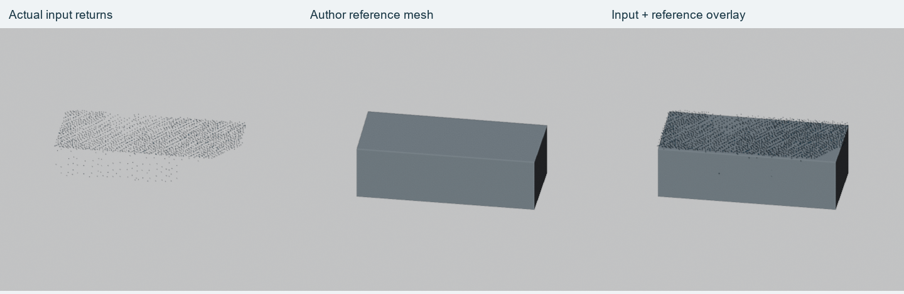
查看侧视立面
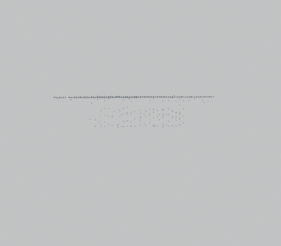
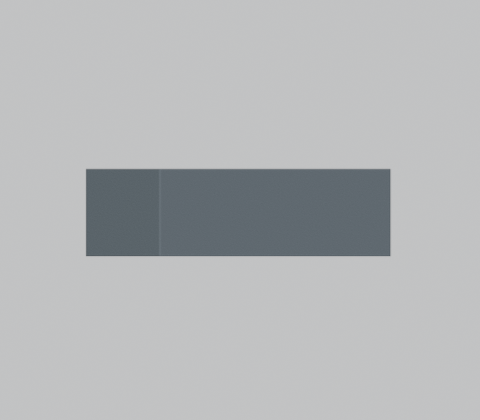
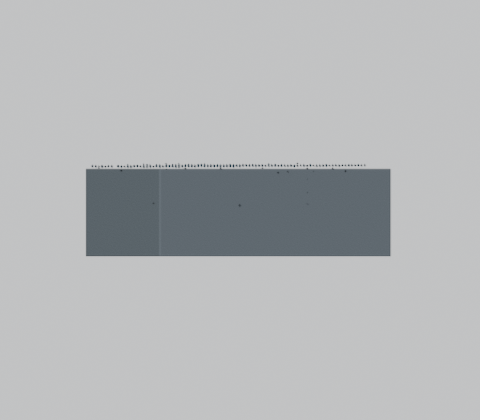
真实 ALS · 02926_z478b9252000004a9
原作者 testset；几何判定的立面回波 20 点，占 3.42%。
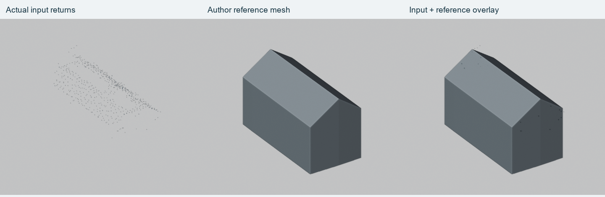
查看侧视立面
真实 ALS · 04499_z4961a69d00000000
原作者 trainset；几何判定的立面回波 50 点，占 7.31%。
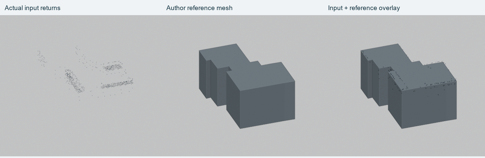
查看侧视立面
仿真 ALS · DEBY_LOD2_4870013
原作者 trainset；几何判定的立面回波 404 点，占 6.93%。
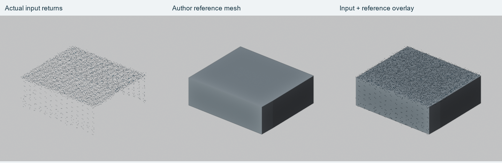
查看侧视立面
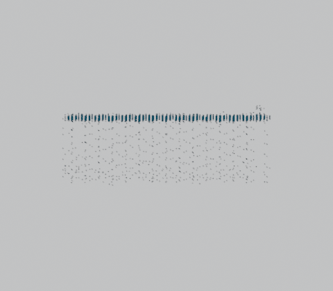
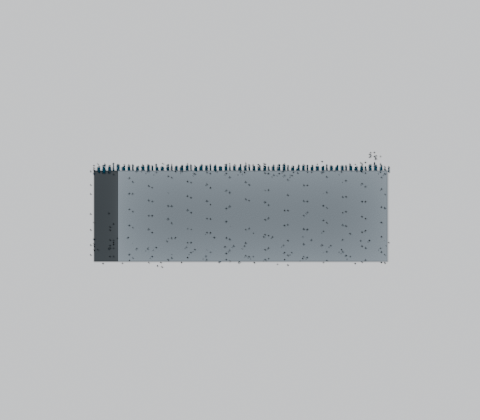
仿真 ALS · DEBY_LOD2_5056245
原作者 testset；几何判定的立面回波 8244 点，占 13.94%。
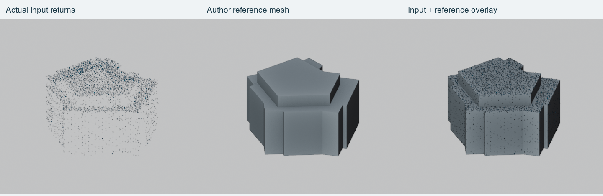
查看侧视立面
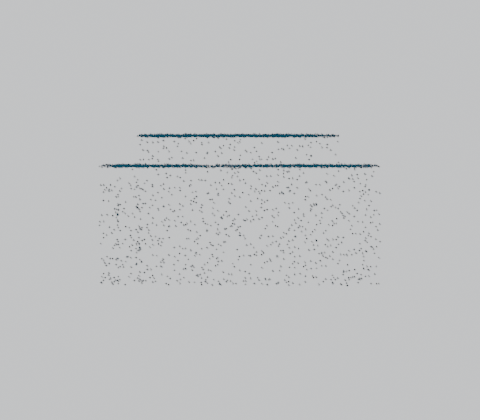
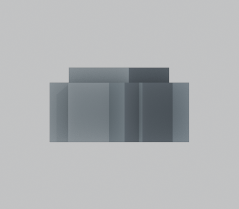
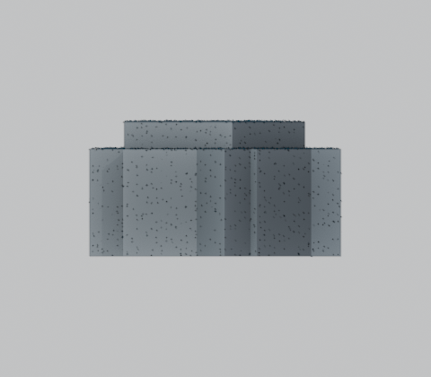
可复现下载与坐标恢复
Point2Building 原包 1,612,680,162 字节；PolyGNN mini 原包 163,238,451 字节。提取仅允许数据文件，不执行包内训练代码、Shell 或反序列化 checkpoint。Point2Building 按作者 world = normalized × scale + center 同时还原点云和 Mesh，并做重新读取检查；PolyGNN 保留其归一化坐标。
作者 Point2Building 的训练加载代码会利用参考 Mesh 高程添加人工底面点。本项目下载/审核直接读取原始 XYZ，没有使用这种额外点。后续公平复现必须单列该预处理，不能把它当传感器实测回波。
后续使用
优先用真实入门样例开发立面、屋面和地面分离诊断；仿真集合辅助验证已知几何。完整性能评测需回到作者完整测试集并声明预处理，完成近重复和空间组审计。此次完成的是数据获取与 QA，尚未运行新的重建算法训练或性能比较。
审计摘要 · 真实样例审核记录 · 仿真样例审核记录
一手来源：Point2Building 作者仓库、Point2Building 论文、PolyGNN 作者仓库、PolyGNN 数据说明。原始数据不随本仓库再分发，使用须遵守原来源许可。